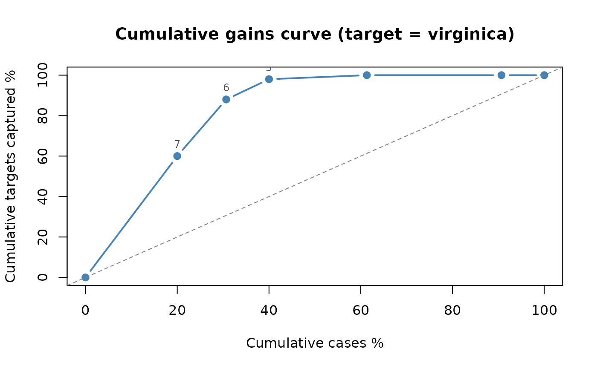
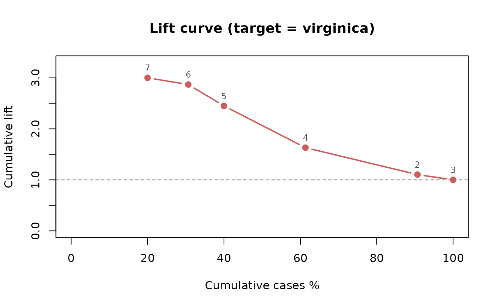

Sorts the terminal nodes by decreasing response rate (node mean for continuous responses) and computes cumulative gains and lift, corresponding to the SPSS gains table.
Arguments
- fit
A fitted
"chaid"object returned bychaid().- data
Optional data frame. If
NULL(default), node statistics from training are used. If supplied, cases are routed withpredict.chaid()and the table is recomputed, e.g. for evaluation on holdout data.- target
Response level of interest for categorical responses. For a binary response the second level is used by default; for three or more levels
targetis required.- weights, freq
Case and frequency weights for
data, when supplied.- x
A
"chaid_gains"object.- ...
For
plot(), further arguments passed tographics::plot(); ignored byprint().- type
"gains"(default) draws the cumulative gains curve (percentage of cases vs. percentage of captured targets, diagonal = random),"lift"draws the cumulative lift curve (1 = random).
Value
An object of class "chaid_gains", a list with the gains
table (table), the target level, the response type (ytype),
the overall rate (overall) and the data source ("training"
or "newdata"). print() and plot() methods are available.
Examples
fit <- chaid(Species ~ ., data = iris,
control = chaid_control(min_parent = 30, min_child = 10))
g <- chaid_gains(fit, target = "virginica")
print(g)
#> CHAID gains table (target = virginica)
#> Overall response rate: 0.3333
#>
#> node n pct_n resp pct_resp rate index cum_pct_n cum_pct_resp cum_lift
#> 7 30 20.00 30 60 1.0000 300.0 20.00 60 3.000
#> 6 16 10.67 14 28 0.8750 262.5 30.67 88 2.869
#> 5 14 9.33 5 10 0.3571 107.1 40.00 98 2.450
#> 4 32 21.33 1 2 0.0312 9.4 61.33 100 1.631
#> 2 44 29.33 0 0 0.0000 0.0 90.67 100 1.103
#> 3 14 9.33 0 0 0.0000 0.0 100.00 100 1.000
plot(g)

plot(g, type = "lift")
